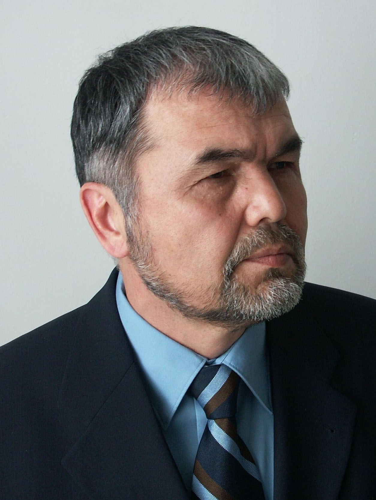

Birlik va Erk: mustaqillik arafasidagi milliy uygʻonish (1988–1991)
Qayta qurish (perestroyka) yillarida Oʻzbekistonda milliy uygʻonish harakati shakllandi. Uning markazida 1988-yil 16-noyabrda tashkil etilgan “Birlik” xalq harakati (rahbari Abdurahim Poʻlatov) va undan oʻsib chiqqan, 1990-yilda tuzilgan “Erk” demokratik partiyasi (rahbari Muhammad Solih) turardi. Birlik oʻzbek tiliga davlat tili maqomini berish uchun kurashdi; bu maqsadga 1989-yil 21-oktabrda erishildi. Quyida ushbu harakatlar, ularning talablari, 1991-yil 29-dekabrdagi prezident saylovi va keyingi taqiqlanish faqat obroʻli manbalar asosida, neytral va faqat faktlarga tayangan holda keltiriladi.

1980-yillar oxiridagi qayta qurish (perestroyka) va oshkoralik (glasnost) davrida Oʻzbekistonda milliy va demokratik uygʻonish harakati shakllandi. Ushbu maqolada “Birlik” xalq harakati va “Erk” demokratik partiyasining tashkil etilishi, ularning talablari, 1991-yilgi prezident saylovidagi ishtiroki va keyingi taqdiri faqat obroʻli manbalar — tarixiy va ensiklopedik maʼlumotnomalar hamda saylov hujjatlari asosida, neytral va faqat faktlarga tayangan holda keltiriladi. Maqsad — baho berish emas, hujjatlashtirilgan faktlarni taqdim etish.
“Birlik” xalq harakati (1988)
“Birlik” xalq harakati 1988-yil 16-noyabrda jamoat harakati sifatida tashkil etildi. Uning asoschilari qatorida ziyolilar, yozuvchi va olimlar boʻlgan; harakatga Abdurahim Poʻlatov rais etib saylangan. Birlikning dastlabki asosiy talabi — oʻzbek tiliga davlat tili maqomini berish edi, chunki oʻsha davrda respublikaning rasmiy tili rus tili hisoblanar, oʻzbek tili esa ikkinchi darajali maqomda edi. Harakat shuningdek Orol dengizi inqirozi kabi ekologik muammolar va ijtimoiy adolat masalalarini ham koʻtardi.
Til qonuni — birinchi yirik natija (1989)
Birlik harakatining tashkiliy bosimi va jamoatchilik talabi natijasida 1989-yil 21-oktabrda Oʻzbekiston SSR Oliy Kengashi “Davlat tili toʻgʻrisida”gi qonunni qabul qildi va oʻzbek tili respublikaning davlat tili deb eʼlon qilindi (rus tili rasmiy muloqot tili sifatida saqlab qolindi). Bu — milliy uygʻonishning birinchi yirik qonuniy gʻalabasi boʻlib, keyinchalik mustaqillik sari qoʻyilgan muhim qadamlardan biriga aylandi. Oʻzbek tilining davlat tili boʻlishi va unga oid qonun alohida maʼlumotnomada batafsil koʻrib chiqilgan.
Mustaqillik gʻoyasiga burilish
1989-yil oxiridan boshlab Birlik harakati faqat til masalasi bilan cheklanmay, Oʻzbekistonning SSSR tarkibidan mustaqilligi va mamlakatda demokratik islohotlar oʻtkazilishini talab qila boshladi. Shu davrda harakat ichida gʻoyaviy yoʻnalishlar farqlandi: bir qism “avval demokratiya, keyin mustaqillik” tamoyilini ilgari surgan boʻlsa, boshqa qanot “mustaqillik — birinchi oʻrinda” degan yondashuvni yoqlab chiqdi. Aynan shu ikkinchi yoʻnalish keyinchalik alohida partiyaning tashkil topishiga olib keldi.
“Erk” demokratik partiyasi (1990)
“Erk” (Erkinlik) demokratik partiyasi Birlik harakatidan oʻsib chiqdi va 1990-yilda tashkil etildi; partiya raisi etib yozuvchi va shoir Muhammad Solih (1949-yil 20-dekabrda tugʻilgan) saylandi. Erk “mustaqillik birinchi oʻrinda” tamoyilini asos qilib oldi va oʻz maqsadini Oʻzbekiston uchun mustaqil demokratik respublika barpo etish deb belgiladi. Partiya 1991-yil 19-sentabrda rasman roʻyxatdan oʻtkazildi — bu uni oʻsha davrda rasmiy maqom olgan muxolifat kuchiga aylantirdi.
1991-yil prezident saylovi
1991-yil 29-dekabrda, mustaqillik eʼlon qilinganidan keyin, Oʻzbekistonda birinchi prezident saylovi boʻlib oʻtdi. Unda Muhammad Solih muxolifat nomzodi sifatida amaldagi prezident Islom Karimovga qarshi nomzodini qoʻydi. Rasmiy natijalarga koʻra, Solih ovozlarning 12,7 foizini oldi va Karimov saylovda gʻolib chiqdi. Bu — Oʻzbekiston tarixida prezident jiddiy raqib bilan kurashgan birinchi (va koʻplab manbalarga koʻra, yagona) saylov boʻldi. Birlik yetakchisi Abdurahim Poʻlatov ham nomzodligini eʼlon qilgan edi, biroq roʻyxatdan oʻta olmadi.
Taqiqlanish va surgun
Saylovdan keyin muxolifatga nisbatan bosim kuchaydi. “Erk” partiyasi 1993-yilda taqiqlandi va uning rahbariyati Turkiya, Istanbulga koʻchib oʻtishga majbur boʻldi. “Birlik” harakati esa 1994-yilda Adliya vazirligida qayta roʻyxatdan oʻta olmay, norasmiy maqomga tushdi; harakat yetakchilarining koʻpchiligi mamlakatni tark etdi. Shu tariqa 1980-yillar oxirida shakllangan ochiq muxolifat harakatlari 1990-yillar oʻrtalariga kelib rasmiy maydondan chiqarildi.
Tarixiy merosi
Birlik va Erk harakatlari qisqa muddat faoliyat koʻrsatgan boʻlsa-da, Oʻzbekistonning mustaqillik sari borgan yoʻlida milliy tildan himoya, ekologik ogohlik va mustaqillik gʻoyasini jamoatchilik muhokamasiga olib chiqishda muhim oʻrin tutdi. 1989-yilgi til qonuni — bu harakatlarning eng koʻzga koʻringan amaliy natijasi boʻldi. Bu maqola faqat hujjatlashtirilgan faktlarni taqdim etadi; davrning toʻliq siyosiy tahlili ilmiy tadqiqotlar mavzusidir.